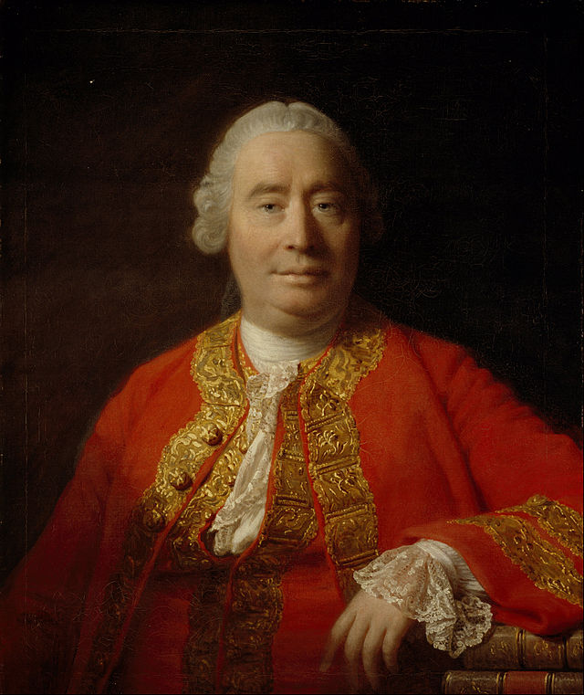

|
HOME
 Mēs pilnīgi varētu iedomāties, ka to saka kāds mūsu laikabiedrs – tik aktuāla un populāra ir šī altruistiskā egoisma tēma mūsdienās (A.A.). We could totally imagine that speaks our contemporary – so popular is the theme of altruistic egoism nowadays (A.A.).In my opinion, there are two things which have led astray those philosophers that have insisted so much on the selfishness of man. In the first place, they found that every act of virtue or friendship was attended with a secret pleasure; whence they concluded, that friendship and virtue could not be disinterested. But the fallacy of this is obvious. The virtuous sentiment or passion produces the pleasure, and does not arise from it. I feel a pleasure in doing good to my friend, because I love him; but do not love him for the sake of that pleasure. In the second place, it has always been found, that the virtuous are far from being indifferent to praise; and therefore they have been represented as a set of vainglorious men, who had nothing in view but the applauses of others. But this also is a fallacy. It is very unjust in the world, when they find any tincture of vanity in a laudable action, to depreciate it upon that account, or ascribe it entirely to that motive. The case is not the same with vanity, as with other passions. Where avarice or revenge enters into any seemingly virtuous action, it is difficult for us to determine how far it enters, and it is natural to suppose it the sole actuating principle. But vanity is so closely allied to virtue, and to love the fame of laudable actions approaches so near the love of laudable actions for their own sake, that these passions are more capable of mixture, than any other kinds of affection; and it is almost impossible to have the latter without some degree of the former. Accordingly we find, that this passion for glory is always warped and varied according to the particular taste or disposition of the mind on which it falls. Nero had the same vanity in driving a chariot, that Trajan had in governing the empire with justice and ability. To love the glory of virtuous deeds is a sure proof of the love of virtue.
|